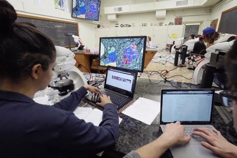
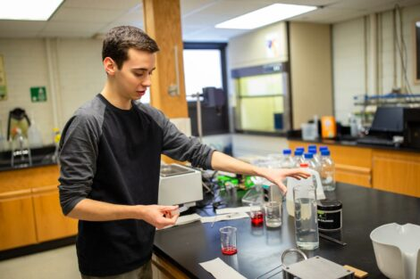

The power of
our connections

Innovation and Entrepreneurship
Providing Inspiration and Support
The Dyer Center for Innovation and Entrepreneurship provides learning opportunities through coursework, competitions, workshops, mentoring, funding, and space for students to start businesses and apply their skills to problems they are passionate about solving.
Career Advantage
A Return on Your Investment
Students come to Lafayette to earn a degree in a field they feel passionate about. They leave with a broader view of the world, a multitude of alumni connections, and higher earning potential.

Meaningful Contributions
Undergraduate Research
Students have plentiful opportunities to do reserach on their own, iwth faculty guidance, through independent studies and honors theses and to undertake reserach jointly with a faculty member.